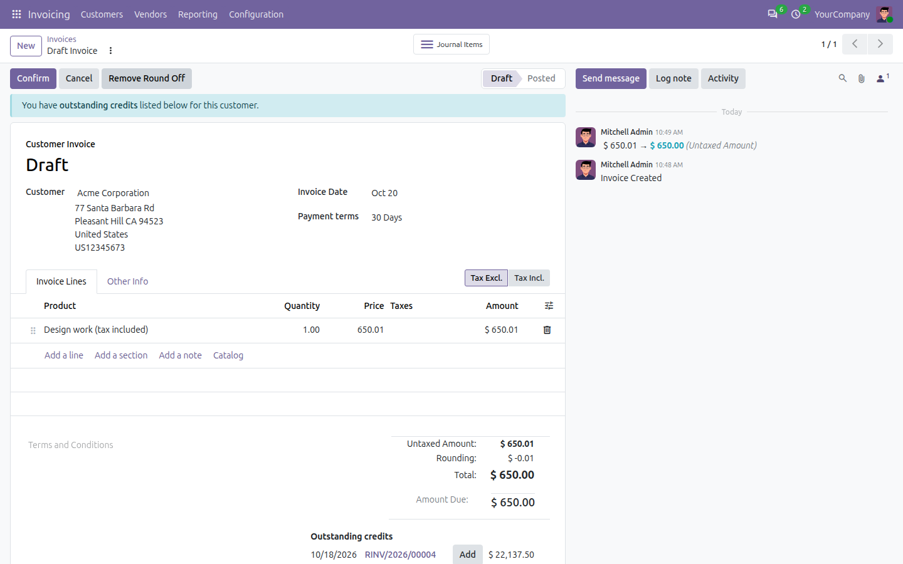
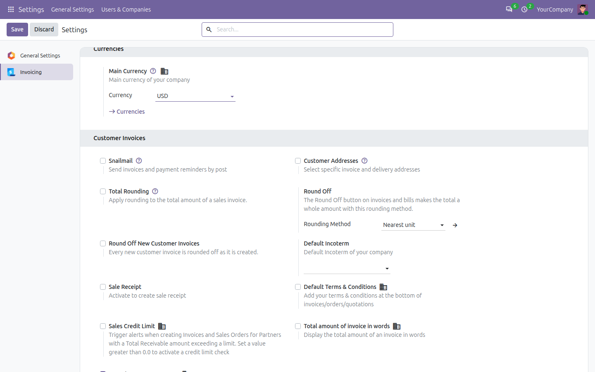

One click on a draft invoice or bill and 650.01 becomes 650.00: Odoo's rounding line takes the difference, booked where your accountant wants it. Or let every new customer invoice round itself off.
One clickRound Off in the invoice header |
ReversibleRemove Round Off while it is draft |
StandardOdoo's own cash rounding does the books |
AutomaticEvery new customer invoice, if you want |
WHY
Odoo can round an invoice total with a cash rounding method, but on Odoo 20 a method only applies by itself when it is tied to a currency, a partner category or a payment method - and the field is hidden unless Cash Rounding is switched on. This module puts the decision where it is taken: a button on the invoice, and a company setting for the automatic version.
|
ℹ
Round Off / Remove Round OffIn the header of every draft invoice, credit note, receipt and vendor bill. The rounding line appears, the total becomes a whole amount, the tax totals show the rounding; the second button takes it away. |
⚙
Your methodAccounting > Settings > Round Off: the rounding method the button uses - nearest unit, nearest 0.05, up, down, as a line or on the biggest tax - with its profit and loss accounts. Empty: the company's first method. |
⚡
AutomaticTick Round Off New Customer Invoices and every customer invoice is rounded off as it is created - from a sales order, by hand or by code - unless another rounding already applies to it. Bills are left alone. |


Invoice Round Off is built and supported by Ebshel Technologies. Depends on Invoicing only.